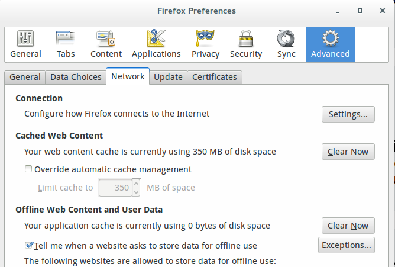
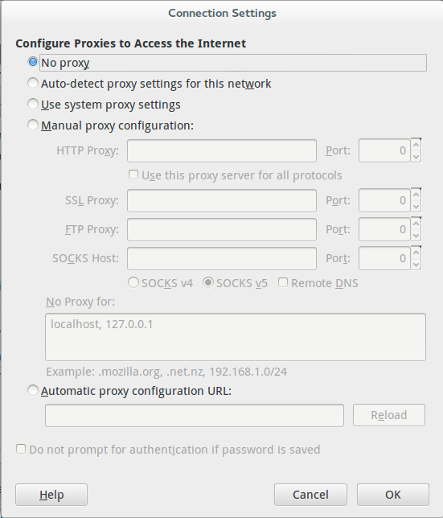

Tunnels are great, they are mysterious, they can be a little scary. Of course we are not talking about train tunnels or roadway tunnels but ssh tunnels here. In our kind of tunnels the goal is to send network packets through the tunnel from your computer to a website and then get the responses back. VPNs can accomplish this nicely with really high level encryption, ssh can do something similar but with slightly less encryption.
To do this you will need a Linux computer with ssh capbabilities and a server somewhere (I use a Linode server for this). We will set up the tunnel to the server and then set Firefox to point to the local tunnel as a proxy. Let's get going.
The basics here are easy, say your external server is at ip address 11.11.11.11 and you have a user account on that server with username me. Now you want to start a tunnel. All you need to do is start an ssh session with your server and bind that session to a local port:
ssh -D 12345 me@11.11.11.11
Of course the ssh starts the ssh connection. The -D is really cool - it binds the connection on the remote server to the numbered port listed next (in this case "12345"). After you do this, when you try to connect to localhost on port 12345 all the traffic will be sent down the tunnel to the remote server. Since you are doing this over ssh the tunnel is secure.
Firefox is happy to send its traffic anywhere you would like. Normally it just follows the rules on your system or router but this is a special case where you want to send that traffic out the tunnel. To do that you have to make some changes in Firefox.
Open the Preferences dialog window (Edit>Preferences or click "Preferences" from the menu button usually in the top right of the Firefox window). Choose the "Advanced" tab and click on the "Network" tab. The dialog you see will look like the photo below.

Click the "Settings" button. The new dialog will look like the screenshot below:

Select the "Manual proxy configuration" radio button, the boxes under it will be come active. In the 'SOCKS Host" box put 127.0.0.1 and make the corresponding port 12345. Make sure the SOCKS v5 radio button is selected.
For a lot of things this may work. The problem is you can run into DNS settings on some networks (or in some countries) where the DNS servers are hijacked and return gibberish when you try to connect to a disallowed service. To make sure all the DNS traffic goes through the tunnel you need one more step.
Firefox knows that editing the about:config preferences can do some major damage so it will warn you that this will void your warranty (you know the warranty you signed when you started using open source software? You mean you didn't sign it?!? I guess you can forge ahead risk taker!). Click the I'll be careful, I promise button.
The page that loads is a confusing array of options for controlling how Firefox works - remember all those options with your former closed source software? No? Probably because they weren't there. With great power though, comes great responsibility, seriously, be careful with this.
In the search bar at the top enter "dns" - you should get a much shorter list of options. The one you are looking for is network.proxy.socks_remote_dns, if you haven't done anything crazy to your system in the past it should have a Status of default, a Type of boolean, and a Value of false. All we need to do is change the Value to True - do this by double clicking where it says False - the line will turn bold and the Value will change to True.
Now, supposedly you don't have to restart Firefox after you make these changes but I have better luck if I do a restart. Once you restart Firefox you will be surfing through the tunnel (or is the correct term 'pipe' when you are talking surfing?).
When you are ready to close the tunnel simply disconnect from the ssh connection and you are back to the original configuration. You will have to move your Firefox back to "No Proxy" in the Preferences>Advanced>Network>Settings screen once you close the tunnel. This can be automated by setting up a Firefox profile with the required proxy settings that can be run when you are using the tunnel, then run regular Firefox (i.e. no proxy settings) when you want to use the normal connection.
This is basically just the steps I took to do this while following a far more complete tutorial here.